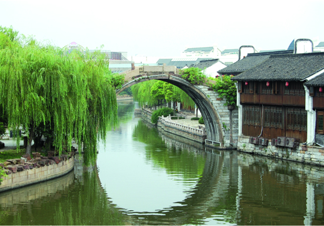

嘉兴市文物保护网 · 市级文物保护单位 · 2014-06-16 · 原文

秀城桥位于嘉兴市南湖区解放街道秀城桥社区芦席汇南，据《竹林人圩志》载，桥始建于明景泰元年（1450），以依城郭、横跨秀水而得名。桥南北走向，系单孔有栏石拱桥，全长36.5米，面宽3.71米，拱跨约11.36米，矢高约5.5米，南、北两侧桥坡分别有台阶27级和35级。拱圈由条石纵联分节并砌而成，金刚墙错缝平砌。桥栏存望柱7个，其中桥顶方形望柱3个，素面无纹饰，桥南北落坡旁圆形望柱4个，呈莲花头状。东西桥额刻“重建秀城桥”，桥顶栏板刻花草纹，桥身西侧楹联刻“帝道遐昌，兴水利而济涉；皇口巩固，乐民以便成梁。”东侧上联已风化无法辨识，下联刻“凭眺一濠，是号秀城之胜概。” 秀城桥是嘉兴市区仅存的少量石拱桥之一，历史悠久，造型美观，所处位置是嘉兴最早的商业中心，具有较高的历史和艺术价值。1981年公布为嘉兴市级文物保护单位。